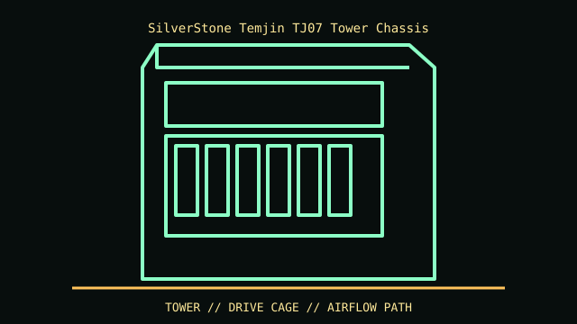

[ IDENTIFIED ENCLOSURE // SILVERSTONE TEMJIN TJ07 FAMILY ]
SilverStone Temjin TJ07 Tower Chassis
220 × 560 × 565 mm (W × H × D); thick unibody aluminum enclosure with separated lower PSU/radiator chamber.

REVISION / FIT CAVEAT: TJ07-B, TJ07S and windowed variants differ in finish/window and bundle details; do not confuse with TJ11. Check exact panel and drive-cage accessories.
Model-specific mechanical record
| Catalog leaf | Tower and legacy desktop cases |
|---|---|
| Identity / generation | SilverStone Temjin TJ07 family |
| Dimensions / clearance | 220 × 560 × 565 mm (W × H × D); thick unibody aluminum enclosure with separated lower PSU/radiator chamber. |
| Drive bays / mounts | Seven external 5.25-inch bays, one external 3.5-inch position occupied by I/O, and six internal 3.5-inch positions in listed base layout. |
| Board / chassis compatibility | SSI-EEB, E-ATX, ATX and microATX support; seven expansion slots. Dual ATX PSU support and lower radiator area depend on bracket/configuration. |
| Revision identification | TJ07-B, TJ07S and windowed variants differ in finish/window and bundle details; do not confuse with TJ11. Check exact panel and drive-cage accessories. |
Compatibility and preservation
SSI-EEB, E-ATX, ATX and microATX support; seven expansion slots. Dual ATX PSU support and lower radiator area depend on bracket/configuration.
Aluminum edges and large panels dent easily. Keep lower-chamber brackets, drive cages and original long screws grouped by location; verify rail/radiator conversions are not improvised.
Before transfer or restoration, photograph the complete model label, assembly/board revisions, bay/backplane identifiers and included accessories. Measure the actual specimen when planning installation or shipping; nominal envelope figures may exclude protruding feet, rails, doors or cables.
Manufacturer manuals and archival sources
- SilverStone — Temjin TJ07 specificationsModel-specific manufacturer specification, service manual, or technical reference used for the listed dimensions and mechanical configuration.
- SilverStone — TJ07 manufacturer product pageSupplemental model documentation or institutional/technical archival record; use the exact product code and manual revision for a specimen.
Listings distinguish base configuration from optional drive, PSU, fan, rack and accessory kits. Do not combine maximum capacities if cages or components occupy the same volume.